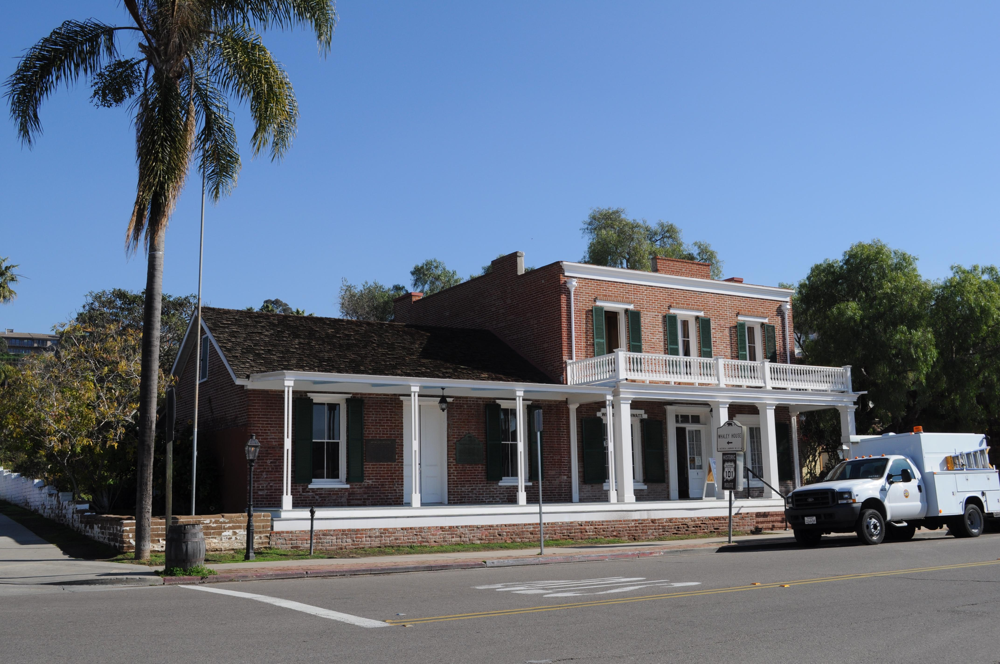

The History of Whaley House
Located in the heart of Old Town San Diego, California, the Whaley House is one of Southern California's most famous historic residences. Built between 1856 and 1857 by merchant Thomas Whaley, the elegant brick building served as both a family home and an important gathering place for the growing community. Throughout its history, the property functioned as a store, courthouse, theater, and residence. Today, the beautifully preserved landmark attracts visitors interested in nineteenth-century architecture, California history, and the ghost stories that have made it internationally recognizable.

Origins and Architecture
Construction of the Whaley House began in 1856 under the direction of Thomas Whaley, who designed the two-story residence himself. Built in the Greek Revival style, the structure features red brick walls, symmetrical windows, decorative shutters, and a broad front porch. Whaley manufactured the bricks at his own local brickyard, helping create one of the earliest substantial brick buildings in Southern California. Unlike many nearby structures built from adobe, the house reflected architectural influences from the eastern United States. Its surviving design provides a distinctive example of early San Diego's changing building traditions.
People and Changing History
Thomas Whaley, a businessman originally from New York, built the house for his wife Anna and their growing family. The Whaleys became prominent members of San Diego society, and their home played an unusually important role in the community. Beyond its residential purpose, the building housed commercial activities, theatrical performances, and county government functions. The family also experienced personal tragedies, which later became central to the house's popular ghost stories. Over the following generations, the property became an important historical landmark and was eventually preserved as a museum.
Notable Events
Thomas Whaley began construction of the house on May 6, 1856, and the residence was completed in 1857. The building became an important center of Old Town activity during the following decades. In 1868, part of the house was adapted for theatrical performances, making it an early venue for professional entertainment in San Diego. Beginning in 1869, portions of the building served as the county courthouse and government offices. After experiencing numerous changes in use and ownership, the structure underwent restoration in 1956, helping preserve an important surviving example of nineteenth-century San Diego architecture.
Legends and Mysteries
The Whaley House has long been associated with reports of unexplained activity. One of its best-known legends concerns James “Yankee Jim” Robinson, who was executed near the property in 1852, several years before the house was constructed. Stories claim that his spirit continued to wander the grounds after the Whaley family moved in. Visitors have also reported footsteps, strange sounds, unusual scents, and apparitions believed to resemble former residents. These accounts have helped establish the Whaley House as a popular destination for ghost tours. However, its paranormal reputation rests on personal reports and folklore rather than scientifically verified supernatural evidence.
Evidence and Unanswered Questions
Historical documentation confirms the Whaley House's construction, family ownership, commercial activities, and role in San Diego's early civic life. Architectural records and preserved furnishings offer valuable insight into nineteenth-century domestic life, while local histories document the building's changing uses. However, the supernatural explanations attached to the property remain unverified. Stories involving former residents and unexplained experiences are part of the house's cultural identity, but they cannot be treated as established historical events. The contrast between the documented history and the legends makes the Whaley House an interesting example of how historic landmarks develop enduring reputations.
Sources and References
The historical information presented on this page was compiled from the Whaley House Museum, San Diego County Parks, and the San Diego History Center. These resources document the building's origins, architectural significance, former occupants, and changing public uses. Popular legends and reported paranormal experiences are presented separately from historically documented events.
References
San Diego County Parks — Whaley House https://www.sdparks.org/content/sdparks/en/park-pages/WhaleyHouse.html
San Diego Magazine — Inside the Icon: Whaley House https://sandiegomagazine.com/EVERYTHING-SD/LIVING-DESIGN/NEIGHBORHOODS/INSIDE-THE-ICON-WHALEY-HOUSE/
San Diego History Center — Early San Diego Theaters https://sandiegohistory.org/collection/photographs/theaters/
San Diego History Center — Historic Landmarks https://sandiegohistory.org/journal/1968/july/landmarks/
Whaley House Museum — History and Tours https://www.whaleyhousesandiego.com/san-diego-museums-tours/